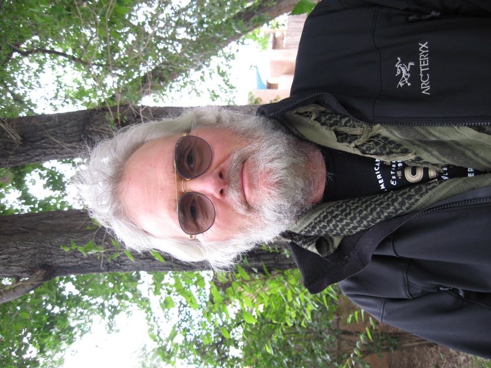
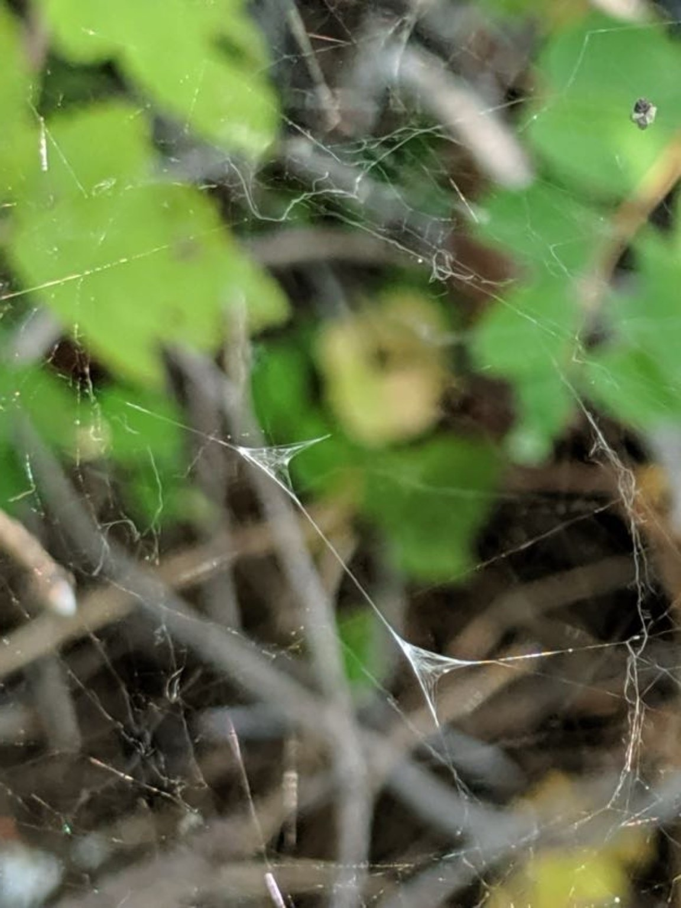
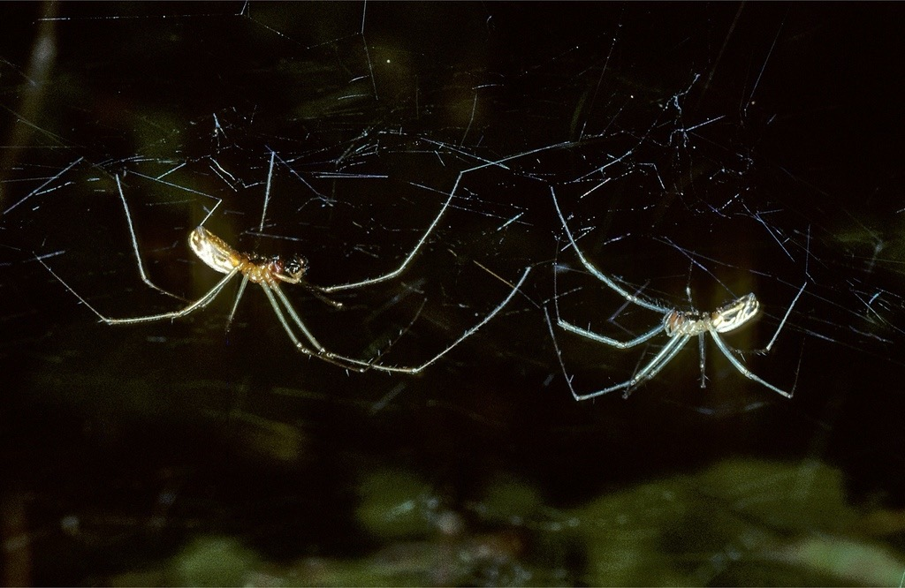
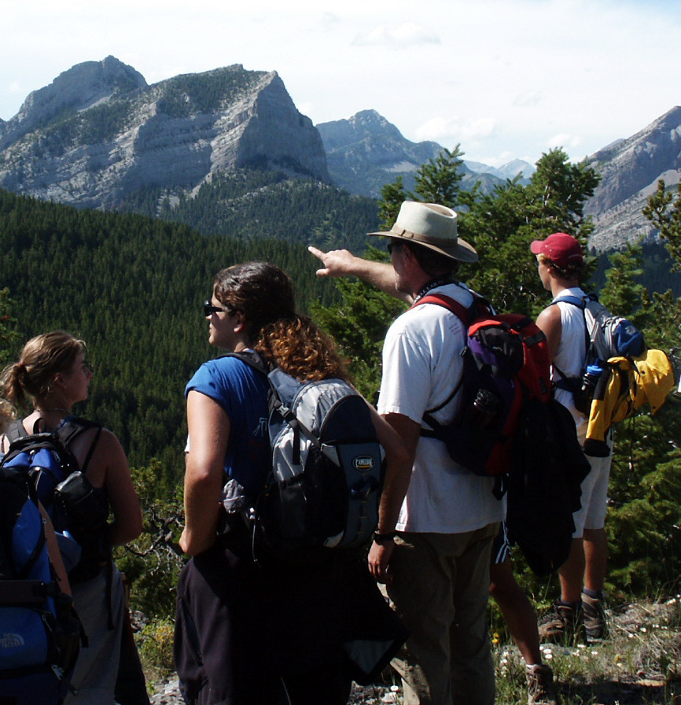

I welcome inquiries from prospective field assistants, students, interdisciplinary collaborators, and investigators interested in carrying the Sierra dome spider research program into its next decades. The work began in 1980 at Flathead Lake Biological Station in northwestern Montana. Its published findings, detailed individual histories, retained physiological records, and molecular beginnings now open a much larger set of questions about development, female choice, and the microbial relationships through which animals make a reproductive life.
Summer 2027: expressions of interest. Planning for possible field participation is under way. Research access, accommodation, supervision, and financial arrangements remain to be confirmed. This is an invitation to discuss the science and possible participation, not an offer of a confirmed placement. Please do not make travel or financial commitments until an arrangement has been explicitly agreed upon.
I am looking for people who want more than a pleasant summer field experience: people who could become deeply engaged in the Sierra dome spider’s sexual selection system and in the questions it makes possible. Some may contribute an intensive field season or a focused analysis. Others may discover a system around which to build a substantial part of their scientific life. I hope eventually to find an outright scientific successor or two, or more, but an assistant need not promise a lifetime’s work before taking a first serious step into this research program.
The right person for the field study will need more than intelligence. The best work on this spider depends on patience, seriousness, disciplined attention, and the ability to become deeply interested in subtle living processes without forcing premature interpretations. It requires someone who can watch carefully for long periods, tolerate ambiguity, heat, insects, fatigue, and failed observations, and still remain open to what the animals are actually doing.
What I value most is not prior expertise in spider biology, but the capacity to learn to see. The Sierra dome spider rewards disciplined natural-history attention: the ability to enter the animal’s situation imaginatively, while constantly checking that imagination against observation, experiment, and evolutionary logic. Its transparent, accessible webs make it possible to follow an encounter closely, recognize both participants’ responses, and return to the same known individual for the next chapter in his or her life.
My immediate priority is to continue the male-personality and developmental study begun in 2024 and continued in 2025. Repeated observations of courtship, fighting, and nighttime exploration provide the starting point. The next field phase would deepen those adult histories and begin following males earlier, while they are still immature occupants of their own foraging webs. We could then connect growth, prey capture, web defense, and maturation with the distinctive reproductive approaches that emerge in adulthood. Laser vibrometry would add fine-grained measurements of courtship and female replies to an individual-history study, rather than replace that study with recordings of anonymous performers.
The larger framework is what I call mating-system metagenomics. I want to understand how the microbial community an individual inhabits, and the microbial community inhabiting that individual, participate in development, reproductive performance, and female mate and sire selection. This is not just a search for pathogens or a list of bacterial names. A central hypothesis is that inherited capacities for immune regulation help an animal recruit and manage useful microbial functions, making the best of the genetic, ecological, and experiential cards it has been dealt.
Those relationships may help organize distinctive combinations of behavior, physiology, and physical capacities. I use “reproductive genres” for potentially recurring, overlapping forms of that organization, not for rigid male types restricted to different mating tactics. Every male retains an opportunistic mating repertoire. The corresponding female question is why she accepts only a few of her many suitors, and why those accepted males obtain such unequal shares of her brood. Different sires may offer complementary contributions, including inherited capacities that help offspring construct effective phenotypes under their own circumstances rather than copy their fathers.
There is enormous opportunity to develop this model system through connected investigations of chemical communication, host–microbe functioning, immune and epigenetic regulation, reproductive anatomy, sperm use, and offspring performance. The most ambitious questions concern whether the processes helping construct an individual male also influence what he can actually contribute to a particular female’s brood. These are research hypotheses, not claims that their proposed mechanisms have already been demonstrated in Sierra domes.
There are also substantial projects that can begin with material already collected. The detailed research page describes the copulatory-courtship energetics archive, the associative-female skipping study, photographic investigations of facial and cheliceral asymmetry, and smaller physiological studies awaiting further analysis. A collaborator could make a focused contribution without taking on the whole program. I welcome people who will question my interpretations, bring methods I do not possess, and discover questions I have not yet imagined.
I plan to contribute ordinary field-program expenses and much of the equipment investment to a feasible continuation. Any support for an individual participant would have to be discussed and confirmed; a salaried postdoctoral collaboration would require separately obtained funding. I would be enthusiastic to engage in grant-writing with the right person or team. Authorship would reflect substantive contributions to the work. My aim is to help capable investigators develop research they can genuinely make their own, not simply enlist help completing a catalogue of my unfinished ideas.
If the science engages you, please contact me using the email address or telephone number below. Tell me something about your interests, experience, and possible availability. A prospective collaboration can begin with one connected question. It does not have to begin with mastery of every technique or agreement with every hypothesis.
→ Read more about the Sierra dome spider research program
→ Sierra Dome Spider overview page

Lucky sighting of a double sperm web, constructed in the dome of a female’s web during the sequence linking copulatory courtship, semen loading, and insemination. The male’s externally deposited semen gives us an unusually accessible opportunity to investigate the contribution of a known living individual.

Sierra dome spider, adult instar. Male left, female right.
Dr. Paul J. Watson is Adjunct Associate Professor of Biology at the University of New Mexico. His Sierra dome spider research began at Flathead Lake Biological Station in northwestern Montana in 1980, and his long association with the station has included field research, teaching, collaboration, and training successive generations of assistants. The published studies, retained data, natural-history knowledge, and unusually observable animals provide a substantial foundation for new investigations connecting sexual selection, individual development, physiology, and microbial ecology.
A new set of essays by PJW presenting the Social Navigation / Niche Change Hypothesis (SNH) of depression is now available. Start with the landing page, then choose one of the three essay streams.
These short “laser vibrometry music videos” show Sierra dome spider precopulatory intersexual courtship, the instrument’s output, and the recording setup. Our 2025 pilot established that recognizable displays could be connected to detailed vibration records. It did not include the repeated recordings of each male with different females needed to test individual repeatability. That is the next opportunity: follow how a known male’s signaling style develops, responds to different partners, and changes with age and experience. The four existing videos are hosted on Internet Archive and open in a new tab.
Course status: the material below describes the completed spring 2026 offering, which involved 25 fine students from several departments, including Psychology and the Humanities. I hope to offer the course twice more, in spring 2028 and spring 2029, probably limited to 15 students each year; please contact me for current enrollment and scheduling information. The archived course numbers, meeting times, room, and syllabus below are not confirmation of subsequent year arrangements.
This is a three-credit-hour seminar offered through the Department of Biology and cross-listed as Psychology 450 and Religious Studies 447. The course examines the evolutionary origins and adaptive significance of religiosity in human social life. It explores how deeply rooted cognitive and emotional systems shape human spirituality, moral reasoning, and group behavior. It provides broad insights into the adaptive design of the human psyche and how it makes sense given Homo sapiens very unique brand of sociality.
Spring 2026 Meeting Schedule: Tuesdays and Thursdays, 11:00 a.m. – 12:15 p.m.
Location: Room 258, Castetter Hall (Biology Building).
Spring 2026 Enrollment Details: Maximum enrollment was 25 students. Admission was by permission of instructor only. Students interested in a future offering should contact Dr. Watson by email (pwatson@unm.edu) to discuss current arrangements.
Contact Information:
Dr. Paul J. Watson
Department of Biology, University of New Mexico
📧 Email: pwatson@unm.edu
📱 Phone: 505-681-3391
Course Description:
This unique evolutionary psychology seminar investigates both the evolutionary origins and potential
adaptive significance of cross-cultural, species-typical aspects of religious experience, belief, and practice. The course is a science
seminar that also encourages evolutionarily informed introspection and self-discovery. It is not an assault on religious belief
but an exploration of how far we can go using modern Darwinian and Hamiltonian evolutionary theory along with a deep examination of human cognitive socioecology to understand our powerful yet
contingent spiritual drives. Come see how the evolutionary ecology lens turned inward can support a lifetime of productive self-study and foster an attitude of 'disciplined wonder' toward humanity and nature.
The syllabus from the spring 2026 offering is retained here: Download Syllabus (PDF).

Pointing out things concerning our shared psychological landscape since ca. 1980.